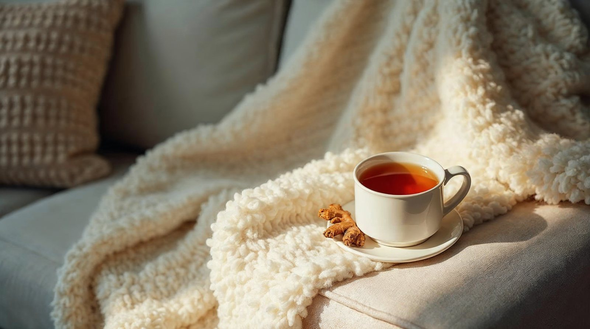
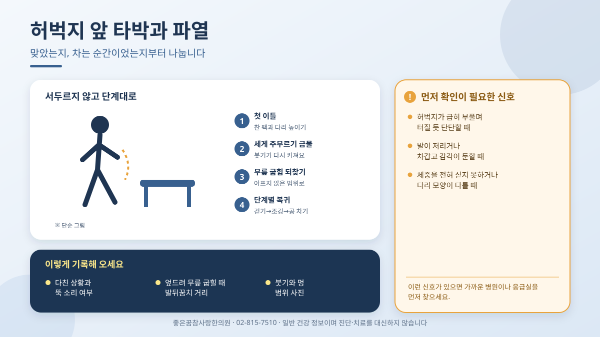

이종호 한의사 감수좋은꿈참사랑한의원 대표원장 (한의사 면허번호 19769)발행 2026-11-26 · 수정 2026-11-26
이 글의 차례
주말 조기축구에서 공을 다투다 상대의 무릎이 허벅지 앞을 정통으로 들이받습니다. 순간 다리가 저리듯 힘이 빠지고, 잠시 주저앉았다가 일어나 남은 경기를 마칩니다. 그런데 집에 돌아와 샤워를 하고 나니 허벅지가 단단하게 부어오르고, 다음 날 아침에는 무릎을 굽히기조차 어렵습니다.
허벅지 앞 근육은 우리 몸에서 가장 크고 힘센 근육 가운데 하나입니다. 걷고, 계단을 오르고, 의자에서 일어나는 모든 순간에 일합니다. 그만큼 다치면 일상이 한꺼번에 불편해지고, 회복 과정을 어떻게 보내느냐에 따라 다시 뛰기까지의 시간이 크게 달라집니다.
허벅지 앞을 다치는 방식은 크게 두 가지입니다. 무언가에 세게 부딪혀 근육이 눌려 다치는 경우, 그리고 공을 차거나 전력으로 달리다가 근육이 스스로 너무 늘어나며 찢어지는 경우입니다. 겉으로는 둘 다 '허벅지가 아프다'지만 돌보는 순서가 조금 다릅니다.
진료실에서는 그래서 다친 순간을 자세히 여쭙습니다. 맞았는지, 차는 순간이었는지, 뚝 하는 느낌이 있었는지요. 이 한마디가 무엇을 먼저 확인할지를 정해 줍니다.
허벅지 앞 근육은 어떻게 생겼나요
허벅지 앞에는 네 갈래의 근육이 모여 무릎뼈를 지나 정강이뼈에 붙습니다. 그래서 네 갈래 근육이라는 뜻으로 대퇴사두근이라고 부릅니다. 이 근육은 무릎을 펴고, 그 가운데 한 갈래는 고관절을 앞으로 굽히는 일도 합니다.
가운데 갈래는 골반에서 시작해 두 관절을 넘어가기 때문에 공을 차거나 전력으로 달릴 때 크게 늘어났다가 순간적으로 강하게 수축합니다. 근육 파열이 가장 흔하게 생기는 자리가 바로 이 갈래입니다. 반면 부딪혀서 생기는 타박은 바깥쪽이나 가운데의 두꺼운 근육에 많이 생깁니다.
타박과 파열은 무엇이 다른가요
타박은 외부의 충격으로 근육이 뼈와 바깥 물체 사이에 눌려 다친 것입니다. 근육 안의 작은 혈관이 터져 붓고, 시간이 지나면서 멍이 피부로 번져 나옵니다. 다친 직후보다 몇 시간 뒤, 다음 날 아침에 더 붓고 뻣뻣해지는 경우가 많습니다.
파열은 근육이 스스로 늘어나는 힘을 이기지 못해 일부가 찢어진 것입니다. 공을 차거나 출발하는 순간 뜨끔하거나 뚝 하는 느낌이 들고, 그 뒤로 다리를 들어 올리거나 차는 동작이 아픕니다. 가벼운 경우는 근육 결이 조금 늘어난 정도이고, 심하면 근육 사이가 움푹 꺼진 자리가 만져지기도 합니다.
- 타박: 맞은 자리가 넓게 붓고 단단하며, 멍이 퍼지고, 무릎 굽히기가 어려움
- 파열: 차거나 달리는 순간 뜨끔, 특정 자리를 누르면 콕 아프고, 다리를 들어 올릴 때 힘이 빠짐
두 가지가 함께 오는 경우도 있습니다. 경기 중 부딪히면서 동시에 근육이 늘어나는 상황이 흔하기 때문입니다. 그래서 이름보다 지금 어느 동작이 얼마나 아픈지를 중심으로 봅니다.
왜 허벅지 앞 부상은 회복이 더디게 느껴질까요
허벅지 앞 근육은 걷기와 계단, 앉았다 일어나기처럼 하루에도 수백 번 쓰입니다. 다른 부위처럼 완전히 쉬게 하기가 어렵다 보니 다친 자리가 계속 조금씩 일을 하게 되고, 그만큼 회복이 더디게 느껴집니다.
타박이 크면 근육 안에 고인 피가 단단한 덩어리처럼 오래 남기도 합니다. 이 시기에 세게 주무르거나 뜨거운 찜질을 오래 하면 붓기가 다시 커질 수 있습니다. 또 너무 이른 시기에 강하게 늘이면 회복 중인 근육에 다시 부담이 갑니다.
통증이 줄었다고 바로 예전처럼 공을 차는 것도 흔한 실수입니다. 아프지 않은 것과 근육이 다시 힘을 낼 준비가 된 것은 다릅니다. 같은 자리를 다시 다치는 경우가 적지 않아서, 힘과 유연성을 되찾는 과정을 차근차근 밟는 것이 중요합니다.
다른 원인과는 어떻게 나눠 보나요
허벅지 앞이 아프다고 모두 근육 부상은 아닙니다. 부딪힌 일이 없는데 허벅지 앞이 저리고 화끈거리면 허리에서 내려오는 신경 문제를 생각합니다. 사타구니 깊은 곳이 아프고 양말 신기가 힘들다면 고관절 문제일 수 있습니다.
무릎뼈 바로 위나 아래가 아프고 계단을 내려갈 때 불편하다면 무릎 앞쪽의 힘줄 문제를 함께 봅니다. 허벅지가 붓고 열이 나며 종아리까지 붓는다면 혈관 문제도 확인해야 합니다. 그래서 다친 일이 분명하지 않을 때는 허리와 고관절, 무릎까지 함께 살핍니다.
집에서 먼저 살펴볼 수 있는 것
엎드린 자세에서 다친 쪽 무릎을 천천히 굽혀 발뒤꿈치가 엉덩이 쪽으로 얼마나 가는지 보세요. 반대쪽과 비교해 어느 정도 차이가 나는지 기억해 두면 회복의 흐름을 가늠하는 기준이 됩니다. 억지로 손으로 당기지는 마세요.
다친 자리를 손바닥으로 가볍게 쓸어 보면서 붓기가 넓게 퍼져 있는지, 한 점이 콕 아픈지 확인합니다. 멍이 무릎 쪽으로 내려오는 것은 고인 피가 중력에 따라 아래로 이동하는 흔한 모습입니다.
의자에 앉아 다친 쪽 다리를 펴서 들어 올려 보고, 서서 한 발로 가볍게 체중을 실어 봅니다. 이 동작들이 어느 정도 가능한지가 다시 걷고 뛰는 일정을 정하는 출발점이 됩니다.
허벅지를 다쳤을 때 자주 헷갈리는 것
첫째, 많이 늘여 줘야 빨리 풀린다는 생각입니다. 회복 초기에 허벅지 앞을 세게 늘이면 아물고 있는 근육에 다시 부담이 갑니다. 늘이기는 붓기가 가라앉은 뒤, 아프지 않은 범위에서 짧게 시작하는 편이 안전합니다.
둘째, 걸을 수 있으니 뛰어도 된다는 생각입니다. 걷기는 허벅지 앞 근육이 낼 수 있는 힘의 일부만 쓰는 동작입니다. 달리기와 공 차기는 몇 배의 힘이 순간적으로 들어가니, 걷기가 편해졌다는 것은 다음 단계를 시작해 볼 수 있다는 신호 정도로 받아들이시면 됩니다.
셋째, 진통제를 먹고 경기를 이어 가면 된다는 생각입니다. 아픔이 가려지면 다친 근육을 평소처럼 쓰게 되어 손상이 커질 수 있습니다. 경기 중 허벅지를 크게 다쳤다면 그날은 멈추는 것이 회복을 앞당기는 길입니다.

단단한 덩어리가 오래 남을 때
큰 타박 뒤에는 근육 안에 고였던 피가 천천히 흡수되면서 몇 주 동안 단단한 덩어리처럼 만져질 수 있습니다. 대부분은 시간이 지나며 부드러워지지만, 이 시기에 세게 주무르거나 반복해서 다시 부딪히면 정리가 더뎌집니다.
몇 주가 지나도 덩어리가 오히려 단단해지고 무릎 굽힘이 다시 줄어든다면, 근육 안에 다른 변화가 생기지 않았는지 영상으로 확인해 보는 것이 좋습니다. 이럴 때는 정형외과와 상의하시도록 안내하고, 한의원 진료는 그 결과에 맞춰 방향을 정합니다.
먼저 이렇게 여쭙니다
처음 오시면 대략 이런 순서로 여쭙니다. 미리 정리해 오시면 이야기가 훨씬 수월합니다.
- 언제, 어떤 상황에서 다치셨나요? 맞았나요, 차거나 달리는 순간이었나요?
- 다친 순간 뚝 소리나 찢어지는 느낌이 있었나요?
- 지금 무릎을 어디까지 굽힐 수 있고, 계단은 오르내릴 수 있나요?
- 붓기와 멍은 어디까지 퍼졌고, 날마다 커지고 있나요?
- 피를 묽게 하는 약이나 진통소염제를 드시고 계신가요?
- 예전에도 같은 자리를 다친 적이 있나요?
피를 묽게 하는 약을 드시는 분은 같은 충격에도 붓기와 멍이 더 크게 생길 수 있습니다. 드시는 약 이름을 꼭 알려 주세요. 다른 곳에서 받은 영상 검사 결과가 있다면 함께 가져와 주시면 좋습니다.
일상에서 먼저 해 볼 수 있는 것
다친 뒤 처음 이틀 정도는 붓기가 더 커지지 않게 돌보는 데 마음을 씁니다. 수건으로 감싼 찬 팩을 10~15분씩 대었다 떼기를 여러 번 하고, 누울 때는 다리를 조금 높여 둡니다.
- 처음 며칠은 세게 주무르거나 뜨거운 찜질 오래 하지 않기
- 타박이 크면 무릎을 편안하게 굽힌 자세로 쉬어 굽힘 각도 지키기
- 걷기가 힘들면 보폭을 줄이고 계단은 난간을 잡고 한 칸씩
- 붓기가 가라앉으면 아프지 않은 범위에서 무릎 굽혔다 펴기
- 다리 들어 올리기, 가볍게 체중 싣기처럼 작은 힘부터 다시 쓰기
술은 다친 뒤 며칠 동안 붓기를 키울 수 있어서 잠시 쉬시길 권합니다. 사우나나 뜨거운 탕도 첫 시기에는 미뤄 두는 편이 편합니다.
붓기가 가라앉고 걸음이 편해지면 운동의 순서를 정합니다. 제자리 걷기와 실내 자전거처럼 충격이 적은 움직임에서 시작해, 가벼운 조깅, 방향 바꾸기, 공 차기 순으로 단계를 밟아 갑니다. 한 단계에서 다음 날 붓기나 통증이 늘지 않으면 다음 단계로 넘어가는 식입니다.
공을 차는 쪽 다리를 다쳤다면 처음 공을 찰 때는 짧은 패스부터, 발 안쪽으로 가볍게 시작합니다. 세게 차는 슈팅은 마지막 단계에 두고, 처음 몇 번은 연습 경기에서 시험해 봅니다.
한의원에서 함께 살필 수 있는 경우
- 붓기와 멍은 빠졌는데 허벅지가 단단하게 뭉친 느낌이 오래가는 경우
- 무릎을 끝까지 굽히기 어렵고 쪼그려 앉기가 불편한 경우
- 계단을 오르내리거나 의자에서 일어날 때 허벅지 앞이 당기는 경우
- 운동에 복귀하기 전 단계별로 몸 상태를 점검하고 싶은 경우
- 한쪽 다리를 아끼느라 반대쪽 무릎이나 허리까지 뻐근해진 경우
좋은꿈참사랑한의원에서는 먼저 다친 정도와 지금 회복의 어느 시기에 있는지를 봅니다. 그다음 맥을 짚고, 허벅지뿐 아니라 무릎과 고관절, 허리까지 눌러 보고 움직여 보며 불편한 자리를 확인합니다.
진찰한 내용을 바탕으로 침, 온열 관리, 움직임 안내 가운데 지금 상태에 맞는 것을 정합니다. 붓기가 큰 첫 시기와 뻣뻣함이 남은 회복기에는 돌보는 방법이 달라서, 시기에 맞춰 조금씩 바꿔 갑니다. 한약을 상의할 때는 드시는 약을 확인하고 신중히 정하며, 임신 중이시면 먼저 알려 주시고 산부인과와도 상의해 주세요.
정형외과에서 치료나 처방을 받고 계신다면 그대로 이어 가시면서 함께 갑니다. 처방받은 약은 상의 없이 멈추지 마세요. 한의원 진료는 그 곁에서 뻣뻣함과 회복 단계를 함께 살피는 쪽이라고 생각해 주시면 됩니다.
이렇게 기록해 오시면 상담이 쉬워집니다
허벅지 부상은 하루하루 조금씩 변해서 기록이 있으면 흐름이 잘 보입니다. 일주일 정도만 간단히 적어 보세요.
- 다친 날과 상황(맞았는지, 차거나 달리는 순간이었는지)
- 엎드려 무릎을 굽혔을 때 발뒤꿈치와 엉덩이 사이 거리
- 붓기와 멍의 범위를 찍은 사진
- 계단, 의자에서 일어나기, 쪼그려 앉기 중 불편한 동작
- 운동을 다시 시도한 날과 다음 날 몸 상태
엉덩이와 발뒤꿈치 사이 거리는 손가락 몇 개가 들어가는지로 적어도 충분합니다. 숫자가 줄어드는 흐름이 보이면 다음 단계로 넘어갈 시기를 정하기 쉬워집니다.
다시 뛰기 전에 확인할 것
운동 복귀는 날짜보다 몸의 상태로 정합니다. 무릎을 반대쪽만큼 굽힐 수 있는지, 한 발로 서서 가볍게 무릎을 굽혔다 펼 수 있는지, 가볍게 뛰어도 다음 날 붓기가 늘지 않는지를 차례로 확인합니다.
복귀한 뒤 몇 주는 운동 전 몸을 데우는 시간을 평소보다 길게 잡으시길 권합니다. 허벅지 앞 근육이 차가운 상태에서 갑자기 강하게 쓰이면 같은 자리를 다시 다치기 쉽습니다. 가볍게 걷고, 제자리에서 다리를 앞뒤로 흔들며 천천히 몸을 깨워 주세요.
허벅지 앞만큼 허벅지 뒤와 엉덩이 근육의 힘도 중요합니다. 앞뒤 근육의 힘이 고르게 받쳐 줄 때 한쪽에 몰리는 부담이 줄어듭니다. 의자에서 천천히 일어났다 앉기, 누워서 엉덩이 들어 올리기처럼 집에서 할 수 있는 동작을 회복기 후반부터 조금씩 더해 보세요.
허벅지 앞 부상은 서두르면 길어지고, 순서를 지키면 생각보다 편하게 돌아오는 경우가 많습니다. 다음에 오시면 기록부터 함께 펼쳐 보고, 지금 어느 단계에 와 있는지 같이 짚어 보겠습니다.
이런 증상은 먼저 확인이 필요합니다
- 허벅지가 급격히 부풀며 터질 듯 단단해지고, 발이 저리거나 차갑고 감각이 둔해지는 경우
- 허벅지뼈 쪽이 심하게 아파 전혀 체중을 싣지 못하거나 다리 모양이 달라 보이는 경우
이런 신호가 있으면 한의원보다 가까운 병원이나 응급실을 먼저 찾으세요.
함께 읽으면 좋은 글
- 운동을 꾸준히 하는 분은 진료 전에 무엇을 알려야 하나요?
- 근육이 아픈 것인지 관절이 아픈 것인지 어떻게 짚어서 말하나요?
- 무릎 앞쪽, 무릎뼈 주변이 시큰한 슬개대퇴통증은 어떻게 살피나요?
- 사타구니가 시큰하고 양말 신기가 힘든 퇴행성 고관절 통증은 어떻게 살피나요?
- 약침을 맞은 날 운동이나 목욕을 해도 되나요?

여쭙는 것
- 언제, 어떤 상황에서 다치셨나요? 맞았나요, 차거나 달리는 순간이었나요?
- 다친 순간 뚝 소리나 찢어지는 느낌이 있었나요?
- 지금 무릎을 어디까지 굽힐 수 있고, 계단은 오르내릴 수 있나요?
생활에서 해 볼 것
- 처음 며칠은 세게 주무르거나 뜨거운 찜질 오래 하지 않기
- 타박이 크면 무릎을 편안하게 굽힌 자세로 쉬어 굽힘 각도 지키기
- 걷기가 힘들면 보폭을 줄이고 계단은 난간을 잡고 한 칸씩
한의원에서 함께 살필 것
- 붓기와 멍은 빠졌는데 허벅지가 단단하게 뭉친 느낌이 오래가는 경우
- 무릎을 끝까지 굽히기 어렵고 쪼그려 앉기가 불편한 경우
- 계단을 오르내리거나 의자에서 일어날 때 허벅지 앞이 당기는 경우
먼저 확인이 필요한 신호
- 허벅지가 급격히 부풀며 터질 듯 단단해지고, 발이 저리거나 차갑고 감각이 둔해지는 경우
- 허벅지뼈 쪽이 심하게 아파 전혀 체중을 싣지 못하거나 다리 모양이 달라 보이는 경우
한눈에 보는 표
| 구분 | 핵심 |
|---|---|
| 여쭙는 것 | 언제, 어떤 상황에서 다치셨나요? 맞았나요, 차거나 달리는 순간이었나요? 다친 순간 뚝 소리나 찢어지는 느낌이 있었나요? |
| 생활에서 해 볼 것 | 처음 며칠은 세게 주무르거나 뜨거운 찜질 오래 하지 않기 타박이 크면 무릎을 편안하게 굽힌 자세로 쉬어 굽힘 각도 지키기 |
| 한의원에서 함께 살필 것 | 붓기와 멍은 빠졌는데 허벅지가 단단하게 뭉친 느낌이 오래가는 경우 무릎을 끝까지 굽히기 어렵고 쪼그려 앉기가 불편한 경우 |
| 먼저 확인이 필요한 신호 | 허벅지가 급격히 부풀며 터질 듯 단단해지고, 발이 저리거나 차갑고 감각이 둔해지는 경우 허벅지뼈 쪽이 심하게 아파 전혀 체중을 싣지 못하거나 다리 모양이 달라 보이는 경우 |
자주 묻는 질문
허벅지를 세게 맞은 뒤 바로 주물러도 되나요?
처음 며칠은 세게 주무르면 근육 안 붓기가 다시 커질 수 있습니다. 찬 팩을 짧게 대고 다리를 높여 쉬다가, 붓기가 가라앉은 뒤 가볍게 움직이며 돌보시길 권합니다.
멍이 무릎 쪽으로 내려오는데 괜찮은 건가요?
근육 안에 고인 피가 아래로 이동하면서 멍이 무릎 쪽으로 번지는 경우가 흔합니다. 다만 날이 갈수록 붓기가 커진다면 진찰로 근육 안을 함께 살펴보시길 권합니다.
근육이 찢어졌는지 어떻게 알 수 있나요?
차거나 달리는 순간 뜨끔하거나 뚝 하는 느낌이 있었는지, 한 점이 콕 아프고 다리를 들 때 힘이 빠지는지가 실마리가 됩니다. 필요하다고 판단되면 초음파로 근육 결을 살펴보고, 더 자세한 검사가 필요하면 정형외과를 안내합니다.
언제부터 다시 축구를 할 수 있나요?
날짜보다 상태로 정합니다. 무릎을 반대쪽만큼 굽힐 수 있고, 가볍게 뛰어도 다음 날 붓기가 늘지 않으며, 방향을 바꿔도 불편하지 않을 때 짧은 패스부터 단계적으로 돌아가시길 권합니다.
허벅지가 단단하게 뭉친 느낌이 몇 주째 남아 있어요.
큰 타박 뒤에는 단단한 느낌이 몇 주 이상 남는 경우가 있습니다. 덩어리가 점점 커지거나 무릎 굽힘이 다시 줄어든다면 초음파나 정형외과 검사로 근육 안을 확인해 보는 것이 좋습니다.
좋은꿈참사랑한의원은 재진 때 지난번 이야기부터 이어서 여쭙니다. 진료시간과 예약은 오시는 길에서 확인하세요.
어디서 상담받을 수 있나요?
좋은꿈참사랑한의원은 서울 동작구 만양로2길 2 신성빌딩 3층·5층(서울 동작구 상도동, 7호선 상도역 3번 출구 근처)에 있습니다. 한의사 3명(이종호 대표원장, 조영기 수석진료원장, 정원영 진료원장)이 진료합니다. 진료시간은 평일 09:30~20:00(점심 13:00~14:00), 토·일·공휴일 09:30~15:00이며, 방문 전 전화로 확인을 권합니다. 예약은 네이버 예약, 카카오톡 상담, 전화 02-815-7510로 받습니다.
이 글은 일반적인 건강 정보이며 개인의 진단이나 치료를 대신하지 않습니다. 증상이 있거나 복용 중인 약이 있다면 진료를 통해 확인하세요. 치료 효과는 개인마다 다를 수 있습니다.
작성 기준: 일반적으로 알려져 있는 건강 정보를 참고해 정리했습니다(대표원장 감수). 증상 기록은 1~2주 동안 하루 1회, 비슷한 시간에 적어 오시면 지난 상태와 비교하기 쉽습니다.